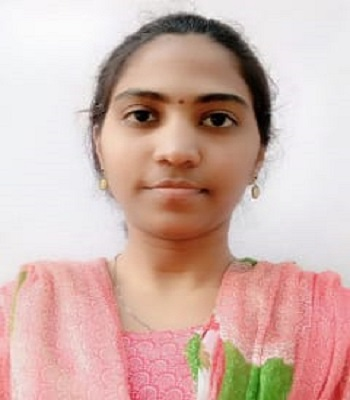
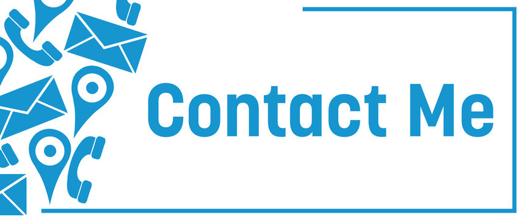

RESUME

Career Objective:
I am a Passionate and Enthusiastic person with high spirits. I would always wish to work
in an Organization, which provides me a lot of learning oppurtunities and to showcase my
abiliies. My never give up attitude would always drive me with immese force to chase my dreams
and my zeal to learn new things assist me to excel in life.
Education
- Graduation(2017-2021) : I Graduated from a prestigious university named as Jawaharlal Nehru
Technological university Anantapur(JNTUA) in Electrical and Electronics Engineering background
with CGPA of 9.14/10 and bagged 6 gold medals for my academic performance.
- Intermediate(2015-2017) : I Completed my Intermediate Education from Narayana Junior College in
Nellore district with percentage of 98.4 in MPC.
-
SSC(2014-2015) : I passed my Secondary School Certificate Examination with CGPA of 9.8/10 from
City english Medium High School in Nellore district.
Work Experience
Techno Functional Consultant in TCS (Sep 2021 -Current)
-
I have been working in Cardinal health care project for the past 1.9 years and have been working on
applications like Manhattan Active WMS, Mahattan WMS, postman, Microsoft DQL database server, Mark Magic,
Manhattan Integration framework and GCP.
-
I have worked on different functionalities like Inbound, outbound, Inventory Management. Also worked on
third party applications like CMS(Carrier Management System), Packsize and Numina.
-
I have acquired a profound knowledge on these applications from my experience and learning, also worked on
many tasks , incidents, Defects, enhancements and change Requests. Also dealt with many critical issues faced
by the business and ensured smooth operation.
Skills
- Manhattan WMS
- Manhattan ACtive WMS
- MySql
- Postman
- MarkMagic
- GCP
- IBM Cognos SCI reporting tool
Certifications
- Acquired certification in Arduino UNO workshop.
- Acquired Course completion on PLC programming Language
Internships
- Completed Internship in Dr.NTTPS thermal power plant, Vijayawada for two weeks
on entire thermal power plant functionality.
- Completed Internship in Diesel Loco Shed, Guntakal on Electrical Motors for two weeks.
My Interests
Declaration
I here by Declare that above mentioned information is true to the best of my knowledge and I
would bare the responsibility for any incorrect information.

Supraja Daggolu